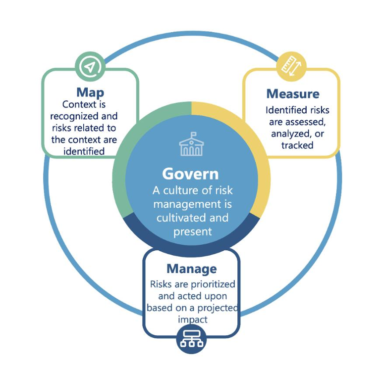

Set rules, assign responsibility, ensure accountability
Understand system, environment, and risks
Evaluate risks using metrics and testing
Act on risks and continuously improve
| GOVERN 1.x | Policies & legal compliance — Define laws, policies, documentation, and risk processes. Establish AI risk management policies aligned with organizational goals. Define legal and regulatory requirements. Integrate AI risk into enterprise risk strategy. Document processes, roles, and responsibilities. |
|---|---|
| GOVERN 2.x | Roles & training — Assign responsibilities and ensure staff are trained. Assign accountability for AI risks. Train staff on AI risk and ethics. Ensure stakeholder communication. |
| GOVERN 3.x | Culture & diversity — Use diverse teams and perspectives to reduce bias. Promote diversity to reduce bias. Encourage inclusive design. |
| GOVERN 4.x | Risk culture & documentation — Promote safety-first mindset, testing, transparency. Build responsible AI culture. Ensure transparency and explainability. Maintain documentation and auditability. |
| GOVERN 5.x | Monitoring & feedback — Continuous review and improvement of AI systems. Monitor AI systems continuously. Collect stakeholder feedback. |
| GOVERN 6.x | Inventory & lifecycle — Maintain AI system inventory and handle decommissioning. Maintain AI system inventory. Manage lifecycle (deploy → retire). |
| MAP 1.x | Context establishment — Define purpose, scope, and environment of AI system. Define system purpose. Identify context and users. Identify assumptions and constraints. Define data inputs. Identify system boundaries. Document architecture. |
|---|---|
| MAP 2.x | Risk identification — Identify potential risks (bias, safety, privacy, etc.). Identify risks (bias, safety, privacy). Identify misuse scenarios. Assess risk likelihood and impact. |
| MAP 3.x | System & use-case definition — Define system boundaries, capabilities, and limitations. Define system capabilities. Identify limitations. Specify application scope. Define operating conditions. Identify dependencies. |
| MAP 4.x | Impact assessment — Understand impact on users, society, environment. Assess impact on individuals. Assess societal/environmental impact. |
| MAP 5.x | Stakeholder engagement — Identify affected users and stakeholders. Identify stakeholders. Engage stakeholders. |
| MEASURE 1.x | Metrics selection — Choose how to measure risks identified in MAP. Select risk measurement metrics. Define evaluation methods. Document unmeasurable risks. |
|---|---|
| MEASURE 2.x | Testing & validation — Test for bias, safety, robustness, explainability. Evaluate performance. Assess bias and fairness. Evaluate robustness. Assess privacy/security. Evaluate data quality. Test system safety. Test resilience to failures/attacks. Monitor system behavior. Ensure explainability. Evaluate human-AI interaction. Validate assumptions. Benchmark against standards. Document results. |
| MEASURE 3.x | Ongoing evaluation — Continuous monitoring of performance. Monitor deployed systems. Detect drift. Update metrics. |
| MEASURE 4.x | Feedback & improvement — Use results to improve system and governance. Use results for decisions. Share findings. Improve measurement process. |
| MANAGE 1.x | Risk prioritization — Decide which risks matter most. Prioritize risks. Define risk tolerance. Decide risk treatment. |
|---|---|
| MANAGE 2.x | Risk treatment — Mitigate risks (fix bias, improve safety, etc.). Implement mitigation strategies. Improve system design. Establish controls and monitoring. Ensure compliance. |
| MANAGE 3.x | Incident response — Handle failures, errors, or harm events. Develop incident response plans. Respond to failures. |
| MANAGE 4.x | Continuous improvement — Adapt system over time. Continuously improve systems. Update/retrain models. Feed lessons back into governance. |

GOVERN enables MAP → MAP feeds MEASURE → MEASURE informs MANAGE → MANAGE loops back to refine GOVERN